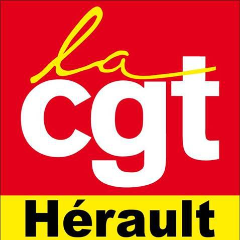

Accès protégé
Valider
Mot de passe incorrect

Carte CGT - Voix Syndicales en Hérault
CGT
CFDT
FO
CFTC
CFE-CGC
Solidaires
UNSA
Autres
Tous
Carences
Vue FD
Retour vue syndicat
Statistiques
Détails de l'établissement
Cliquez sur un point de la carte pour voir les détails